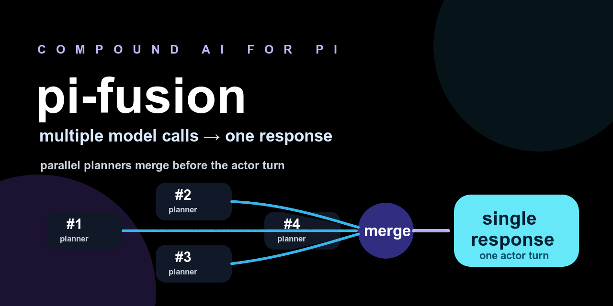
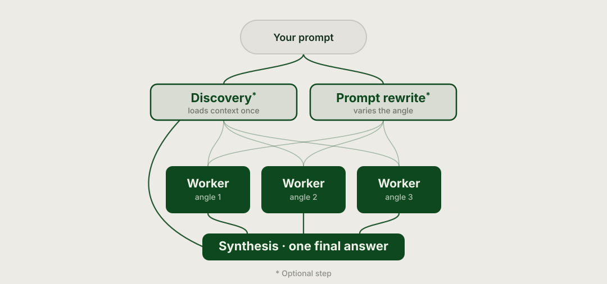

What it does
When fusion is on, prompts get a compound inference pass before the actor turn. The workers are read-only and their notes are injected into the actor's system prompt for that turn only.
Compound AI planning fanout for pi. Multiple read-only model calls explore the task in parallel, then merge into one actor response. Different beast from OpenRouter's hosted Fusion route: this runs local pi subprocesses against your working tree.
pi install git:github.com/leblancfg/pi-fusion
When fusion is on, prompts get a compound inference pass before the actor turn. The workers are read-only and their notes are injected into the actor's system prompt for that turn only.
Some coding tasks hide the hard part. A cheap test-time compute fanout can catch missed files, alternate fixes, or risks before the actor starts editing.
Use it for fuzzy bugs, unfamiliar code, refactor plans, and review passes. Turn it off for tiny edits where latency costs more than the plan.

/fusionPick worker count, discovery model, per-worker models, and the synthesizer model from a small TUI pane.
pi -e ./extensions/pi-fusion/index.tsGood for testing a checkout before installing it as a package.
pnpm run checkRuns formatting, lint, typecheck, tests, and the smoke test.